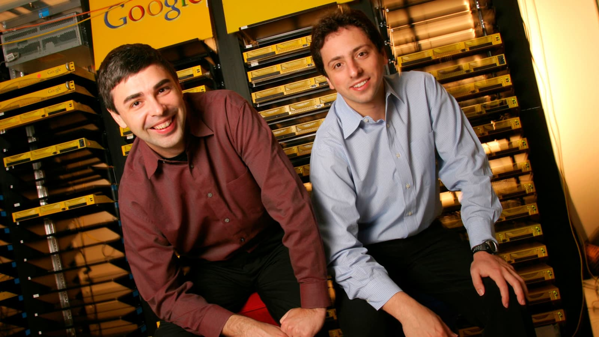
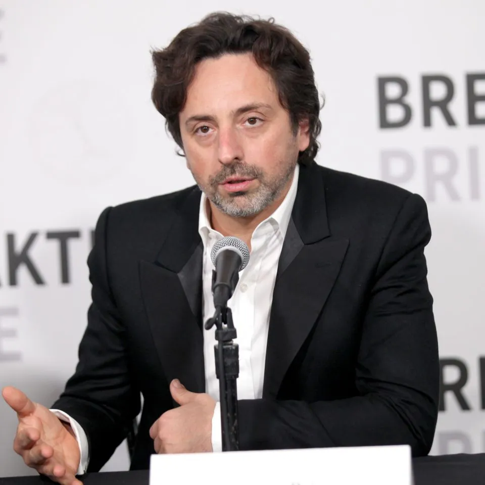
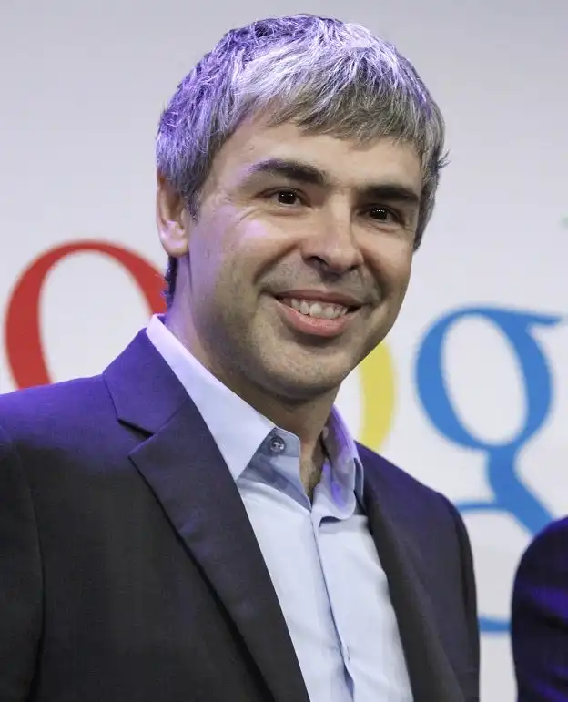

BACKGROUND
SERGEY BRIN

- Sergey Brin was born in Moscow, Russia, on August 21, 1973.
- He emigrated to the U.S. with his family in 1979 and grew up in Maryland.
-
He received a bachelor of science degree with honors in mathematics and computer science from the University of Maryland at Colleg Park.
- He’s widely known as the co-inventor of Google and the PageRank algorithm.
- He served as Google’s president of technology and developed several innovations in technology, as well as the president of Alphabet Inc. from 2015 to 2019.
LARRY PAGE

- He was born March 26, 1973, in Lansing, Michigan, U.S.
- He earned a Bachelor of Science degree in engineering from the University of Michigan.
- He’s widely known as the co-inventor of Google and the PageRank algorithm.
- He served as Google’s CEO from 1998 to 2001 and 2011 to 2015, as well as the CEO of Alphabet Inc. from 2015 to 2019.